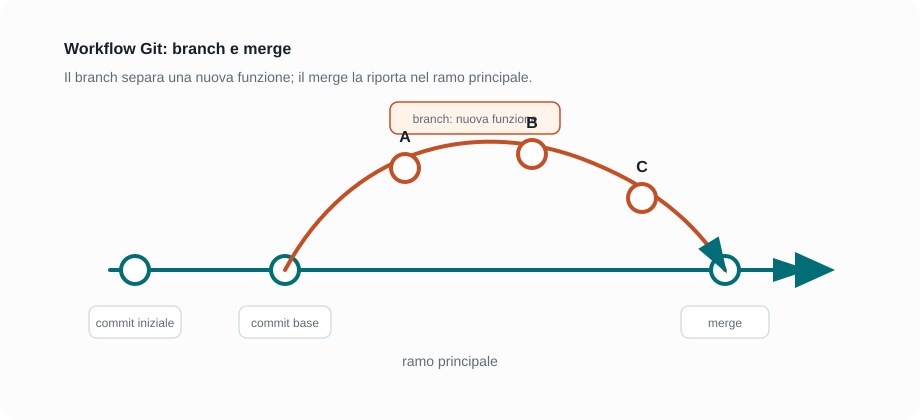

Capitoletto 4
Strumenti e gestione del progetto
Un progetto software richiede strumenti per scrivere codice, provarlo, salvarne la storia, collaborare, costruire una versione distribuibile e organizzare il lavoro del gruppo.
Obiettivi della lezione
- Conoscere le funzioni principali di un ambiente di sviluppo.
- Usare il debugging come metodo di indagine sugli errori.
- Comprendere repository, commit, branch e merge.
- Distinguere build, packaging, distribuzione e deployment.
- Organizzare attività, ruoli e documentazione di progetto.
Ambiente di sviluppo
Un ambiente di sviluppo è l'insieme degli strumenti usati per scrivere, eseguire e controllare il software. Può essere semplice, come un editor di testo con terminale, oppure integrato, come un IDE completo.
| Strumento | A cosa serve | In laboratorio |
|---|---|---|
| Editor o IDE | Scrivere e organizzare il codice. | Visual Studio Code, Eclipse, IntelliJ, NetBeans. |
| Compilatore o interprete | Trasformare o eseguire il codice. | Java, Python, C, JavaScript. |
| Terminale | Lanciare comandi, script e strumenti. | Eseguire test, avviare server, usare Git. |
| Debugger | Controllare il programma passo per passo. | Osservare variabili, chiamate e condizioni. |
Debugging
Il debugging è l'attività con cui si individua e si corregge un errore. Non significa provare modifiche a caso: significa formulare un'ipotesi, osservare il comportamento del programma e verificare dove l'ipotesi fallisce.
| Funzione | Significato | Uso |
|---|---|---|
| Breakpoint | Punto in cui l'esecuzione si ferma. | Bloccare il programma prima della riga sospetta. |
| Step over | Esegue una riga senza entrare nelle funzioni chiamate. | Procedere lentamente nel flusso principale. |
| Step into | Entra dentro una funzione chiamata. | Controllare il comportamento interno. |
| Watch | Mostra il valore di una variabile o espressione. | Capire quando un valore diventa sbagliato. |
Controllo di versione
Un sistema di controllo versione conserva la storia delle modifiche del progetto. Git è uno degli strumenti più usati: permette di salvare commit, confrontare versioni, lavorare su branch e collaborare senza perdere il lavoro precedente.

| Termine | Spiegazione semplice |
|---|---|
| Repository | Cartella di progetto controllata da Git, con codice e cronologia. |
| Commit | Fotografia ragionata delle modifiche in un certo momento. |
| Branch | Linea di sviluppo separata per lavorare senza disturbare il ramo principale. |
| Merge | Operazione che integra modifiche provenienti da un branch in un altro. |
| Conflitto | Situazione in cui Git non sa unire automaticamente modifiche incompatibili. |
Branch, merge e collaborazione
I branch aiutano a lavorare su funzioni diverse, correzioni o esperimenti. In un gruppo, ogni studente può sviluppare una parte del progetto e poi integrare il risultato nel ramo principale dopo controllo e test.
Flusso semplice di lavoro
1. Creo un branch per la nuova funzione
2. Modifico i file necessari
3. Eseguo test e controllo il risultato
4. Salvo uno o più commit
5. Integro il branch nel ramo principale
6. Risolvo eventuali conflittiUn buon commit dovrebbe avere modifiche coerenti e un messaggio chiaro. Messaggi come "update" o "fix" dicono poco; meglio scrivere "Aggiunge controllo disponibilità laboratorio" o "Corregge validazione data prenotazione".
Build, packaging e distribuzione
La build prepara il software per l'esecuzione o la distribuzione. In alcuni linguaggi significa compilare; in applicazioni web può significare minificare file, generare risorse ottimizzate e controllare errori. Il packaging raccoglie ciò che serve per installare o consegnare l'applicazione.
| Fase | Scopo | Esempio |
|---|---|---|
| Build | Preparare una versione eseguibile o pubblicabile. | Compilare Java, generare file statici per un sito. |
| Packaging | Raccogliere file, librerie e configurazioni. | Creare un archivio, un installer o un'immagine container. |
| Deployment | Installare o pubblicare l'app nell'ambiente finale. | Caricare un sito su GitHub Pages o su un server. |
| Rollback | Tornare a una versione precedente se qualcosa non funziona. | Ripristinare l'ultima versione stabile. |
Gestione del progetto
Gestire un progetto significa decidere che cosa va fatto, in quale ordine, da chi e con quali criteri di completamento. Anche nei piccoli progetti scolastici è utile dividere il lavoro in attività chiare.
| Elemento | Domanda | Esempio |
|---|---|---|
| Task | Quale attività concreta va completata? | Creare il form di prenotazione. |
| Priorita | Che cosa serve prima? | Il login viene prima delle funzioni riservate. |
| Responsabile | Chi se ne occupa? | Uno studente cura interfaccia, uno database, uno test. |
| Definition of done | Quando possiamo dire che e finito? | La funzione e implementata, testata e documentata. |
Esempio guidato: mini progetto scolastico
- Il gruppo crea un repository condiviso.
- Si scrive un README con obiettivo, avvio del progetto e ruoli.
- Ogni funzione viene descritta come task.
- Ogni studente lavora su un branch dedicato.
- Prima del merge si eseguono test manuali o automatici.
- Alla consegna si prepara una versione stabile e una breve relazione tecnica.
Esercizi guidati
- Scrivi cinque task per realizzare un'app di gestione biblioteca.
- Per ogni task indica priorita, responsabile e criterio di completamento.
- Descrivi un errore che potresti analizzare con breakpoint e watch.
- Scrivi tre messaggi di commit chiari per modifiche realistiche.
- Spiega la differenza tra build e deployment usando un esempio.
Domande con risposta semplice
A che cosa serve un IDE?
Serve a scrivere, organizzare, eseguire e controllare il codice con strumenti integrati.
Che cos'è un commit?
E una registrazione delle modifiche del progetto in un determinato momento, accompagnata da un messaggio.
Perché si usano i branch?
Per lavorare su modifiche separate senza compromettere subito il ramo principale del progetto.
Che differenza c'e tra build e deployment?
La build prepara il software; il deployment lo installa o lo pubblica nell'ambiente in cui verrà usato.
Per ripassare
Collega gli strumenti alle fasi: IDE e debugger aiutano durante implementazione e correzione; Git protegge la storia del progetto; build e deployment preparano e pubblicano la versione finale.